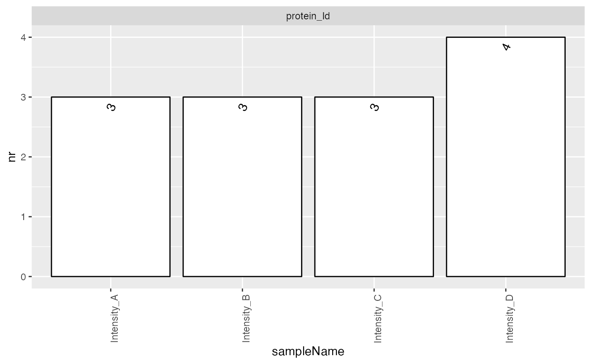

vignettes/CreatingConfigurations.Rmd
CreatingConfigurations.RmdFrequently, the data are available in tables, where the rows represent proteins, and the columns do represent samples. The example shows such a table. The first column contains, the protein id, while the other columns store the intensities for sample A, B, C.
df <- data.frame(protein_Id = c("tr|A|HUMAN","tr|B|HUMAN","tr|C|HUMAN","tr|D|HUMAN"),
Intensity_A = c(100,10000,10,NA),
Intensity_B = c(NA, 9000, 20, 100),
Intensity_C = c(200,8000,NA,150),
Intensity_D = c(130,11000, 50, 50))
df## protein_Id Intensity_A Intensity_B Intensity_C Intensity_D
## 1 tr|A|HUMAN 100 NA 200 130
## 2 tr|B|HUMAN 10000 9000 8000 11000
## 3 tr|C|HUMAN 10 20 NA 50
## 4 tr|D|HUMAN NA 100 150 50This table can be converted into a table in the long format using:
table_long <- tidyr::pivot_longer(df, starts_with("Intensity_"),names_to = "Sample", values_to = "Intensity")
table_long## # A tibble: 16 × 3
## protein_Id Sample Intensity
## <chr> <chr> <dbl>
## 1 tr|A|HUMAN Intensity_A 100
## 2 tr|A|HUMAN Intensity_B NA
## 3 tr|A|HUMAN Intensity_C 200
## 4 tr|A|HUMAN Intensity_D 130
## 5 tr|B|HUMAN Intensity_A 10000
## 6 tr|B|HUMAN Intensity_B 9000
## 7 tr|B|HUMAN Intensity_C 8000
## 8 tr|B|HUMAN Intensity_D 11000
## 9 tr|C|HUMAN Intensity_A 10
## 10 tr|C|HUMAN Intensity_B 20
## 11 tr|C|HUMAN Intensity_C NA
## 12 tr|C|HUMAN Intensity_D 50
## 13 tr|D|HUMAN Intensity_A NA
## 14 tr|D|HUMAN Intensity_B 100
## 15 tr|D|HUMAN Intensity_C 150
## 16 tr|D|HUMAN Intensity_D 50In addition you will need a table with the Sample annotations. In this example with have two groups A, B.
annot <- data.frame(Sample = c("Intensity_A", "Intensity_B", "Intensity_C", "Intensity_D"), Group = c("A","A","B","C"))Now you can annotate the samples in the table with the Intensities.
table_long <- dplyr::inner_join(annot, table_long)We create a AnalysisTableAnnotation and start annotating
the data frame, that is specifying which column contains wich type of
information.
atable <- prolfqua::AnalysisTableAnnotation$new()
atable$fileName = "Sample"
atable$workIntensity = "Intensity"The columns identifying the measured features, which are proteins,
peptides or precursors, are described using the named list
hierarchy. The values of the list are the column names,
while the names are arbitrary as long as they are valid R column names.
Here we use the same names as the column names.
The list factors, is used to point to the columns
containing the factors of your analysis (Group).
atable$hierarchy[["protein_Id"]] <- "protein_Id"
atable$factors[["Group"]] <- "Group"
config <- prolfqua::AnalysisConfiguration$new(atable)
analysis_data <- prolfqua::setup_analysis(table_long, config)
lfqdata <- prolfqua::LFQData$new(analysis_data, config)
lfqdata$hierarchy_counts()## # A tibble: 1 × 2
## isotopeLabel protein_Id
## <chr> <int>
## 1 light 4
smrz <- lfqdata$get_Summariser()
smrz$plot_hierarchy_counts_sample()
Given for example a Peptide Quantification Report generated by
Spectronaut (a table in long format), we demonstrate how to create a
configuration that is required to use it with prolfqua. To do this, an
AnalysisTableAnnotation has to be configured and some
fields (fileName, hierarchy, factors, workingIntensity) need to defined.
The configuration object describes the columns in the long table so that
prolfqua functions know which columns to use.
conflicted::conflict_prefer("rename", "dplyr")
file <- prolfqua:::.find.package.file("prolfqua","samples/spectronaut_PEPTIDE.xls")
xx <- readr::read_tsv(file)
xx <- xx |> dplyr::rename(EG.TotalQuantity = "EG.TotalQuantity (Settings)")
xx$Isotope.Label <- "light"We create a Table annotation object and start annotating the data we
read. Since in this example we eventually want to do more filtering on
data quality we will also define the ident_qValue in this
AnalysisTableAnnotation.
atable <- prolfqua::AnalysisTableAnnotation$new()
atable$fileName = "R.FileName"
atable$ident_qValue = "EG.Qvalue"
atable$workIntensity = "EG.TotalQuantity"
atable$isotopeLabel = "Isotope.Label"The columns identifying the measured features, which are proteins,
peptides or precursors, are described using the named list
hierarchy. The values of the list are the column names,
while the names are arbitrary as long as they are valid R column names.
Here we use the same names as the column names.
The list factors, is used to point to the columns containing the factors of your analysis (group). Here, we rename the column “R.Condition” to “Marker”. In figures and legends generated by prolfqua the name “Marker” will then be used and not “R.Condition”. The data.frame can also contain more than one factor.
atable$hierarchy[["PG.ProteinAccessions"]] <- "PG.ProteinAccessions"
atable$hierarchy[["EG.PrecursorId"]] <- "EG.PrecursorId"
atable$factors[["Marker"]] <- "R.Condition"Lastly, we create an Analysis parameter object, and the Analysis
Configuration. The function setup_analysis, creates from
data frame in long format a data.frame compatible with your
configuration. We can now run most of the function in the package using
the data and configuration.
config <- prolfqua::AnalysisConfiguration$new(atable)
analysis_data <- prolfqua::setup_analysis(xx, config)
prolfqua::summarize_hierarchy(analysis_data, config)## # A tibble: 1 × 3
## PG.ProteinAccessions Isotope.Label_n EG.PrecursorId_n
## <chr> <int> <int>
## 1 H0YD97;O00330 1 4Now the analysis_data object is ready to generate the
LFQData class instance. This object is the start for
further analysis.
lfqdata <- prolfqua::LFQData$new(analysis_data, config)With this, it is possible for example to use the
get_Summariser function to visualize and summarise the data
efficiently.
smrz <- lfqdata$get_Summariser()
smrz$plot_hierarchy_counts_sample()Shown are how many precursors or proteins are found in each sample
The prolfqua package is described in (Wolski et al. 2022).
## R version 4.3.2 (2023-10-31)
## Platform: aarch64-apple-darwin20 (64-bit)
## Running under: macOS Sonoma 14.2.1
##
## Matrix products: default
## BLAS: /Library/Frameworks/R.framework/Versions/4.3-arm64/Resources/lib/libRblas.0.dylib
## LAPACK: /Library/Frameworks/R.framework/Versions/4.3-arm64/Resources/lib/libRlapack.dylib; LAPACK version 3.11.0
##
## locale:
## [1] en_US.UTF-8/en_US.UTF-8/en_US.UTF-8/C/en_US.UTF-8/en_US.UTF-8
##
## time zone: Europe/Zurich
## tzcode source: internal
##
## attached base packages:
## [1] stats graphics grDevices utils datasets methods base
##
## loaded via a namespace (and not attached):
## [1] gtable_0.3.4 xfun_0.42 bslib_0.6.1 ggplot2_3.5.0
## [5] htmlwidgets_1.6.4 ggrepel_0.9.5 tzdb_0.4.0 vctrs_0.6.5
## [9] tools_4.3.2 generics_0.1.3 parallel_4.3.2 tibble_3.2.1
## [13] fansi_1.0.6 highr_0.10 pkgconfig_2.0.3 pheatmap_1.0.12
## [17] data.table_1.15.2 RColorBrewer_1.1-3 desc_1.4.3 lifecycle_1.0.4
## [21] prolfqua_1.1.6 compiler_4.3.2 farver_2.1.1 stringr_1.5.1
## [25] textshaping_0.3.7 munsell_0.5.0 htmltools_0.5.7 sass_0.4.8
## [29] yaml_2.3.8 lazyeval_0.2.2 plotly_4.10.4 pillar_1.9.0
## [33] pkgdown_2.0.7 crayon_1.5.2 jquerylib_0.1.4 tidyr_1.3.1
## [37] MASS_7.3-60.0.1 cachem_1.0.8 tidyselect_1.2.0 conflicted_1.2.0
## [41] digest_0.6.34 stringi_1.8.3 dplyr_1.1.4 purrr_1.0.2
## [45] labeling_0.4.3 forcats_1.0.0 fastmap_1.1.1 grid_4.3.2
## [49] archive_1.1.7 colorspace_2.1-0 cli_3.6.2 magrittr_2.0.3
## [53] utf8_1.2.4 readr_2.1.5 withr_3.0.0 scales_1.3.0
## [57] bit64_4.0.5 rmarkdown_2.26 httr_1.4.7 bit_4.0.5
## [61] gridExtra_2.3 ragg_1.2.7 hms_1.1.3 memoise_2.0.1
## [65] evaluate_0.23 knitr_1.45 viridisLite_0.4.2 rlang_1.1.3
## [69] Rcpp_1.0.12 glue_1.7.0 vroom_1.6.5 jsonlite_1.8.8
## [73] R6_2.5.1 systemfonts_1.0.6 fs_1.6.3